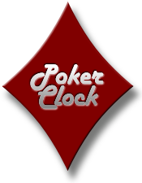

|
|
|
Choose Practice to practice your poker skills against
computer controlled opponents in a variety of poker tournament formats. You can change any
aspect of the tournament, including blinds, buy-in, rebuys, and add-ons.
|
 |
Choose Online to play poker tournaments with other people
on your local area network (LAN) or over the internet. Your friends may join you in an online
game using the demo in order to try the game. You do not play for real money with DD Poker, nor
do we ask for any credit information to play online.
|
|
Choose Analysis to view
detailed statistics of all your previous games, including hand histories.
|
|  |
Choose Poker Clock to setup and manage your own home
tournaments when your friends visit to play cards. You can decide the buy-in, rebuys, add-ons,
blinds structure and payouts.
|
|
|
|
|
Displays the player profile screen. You can change
the current player profile and/or online-activate a player to use DD Poker's
public games list. Separate statistics are maintained for each player
profile (as viewed in the Analysis screen),
so it is wise to create a player profile for each user.
| New |
When you create a New player
profile you have three options, all relating to our public games
list. All three options allow you to play private online games
with your friends, but if you wish to Join
a public game or List the game you are hosting
on our public games list, you need to set up an online profile.
- Not Used to Join/List Public Games -
Choose this option to create a standard DD Poker profile.
All game functions can be used including private online
games with friends, except the ability to play games on
our public games list.
- Activate Profile to Join/List Public Games
- In order to Join a public game or List the game you are
hosing on our public games list, you need to online-activate your profile by
validating
your email address with DD Poker. Enter your email address and choose
OK, an email will be sent to you with a password. Enter
this password into your player profile to complete the validation to
online-activate.
The email will be sent immediately, but allow a few minutes
for the email to arrive due to potentially high traffic
on your ISP.
Note: The player profile name is what other
players see when you join public games and is what is listed
on the public DD Poker website. You cannot change this name
after it is created, so choose wisely. If you name is already
taken, you will be notified and will have to choose another
name.
- Link to Existing Online Profile
- Choose this option if you already have an existing online
profile and you wish to reclaim it. Use this option if you
have reinstalled the software or wish to use your online
name on a different machine.
You must create at least 1 profile to play DD Poker. The
profile name has a maximum of 15 characters.
|
| Edit |
Edit selected player profile in order to rename
the player or online-activate the player to Join or List online games.
If you have not yet online-activated your profile to Join/List online
games, you will see the choices shown above under New.
If you have started
the email validation to online-activate for your profile, you will be asked
for the password sent to you by email to complete the process, or you may change
your email address or
Resend your password.
- Change email - If you have not received the validation
email with your password,
you may check or change the email you typed in by clicking change email.
- Resend Password - If you have not received the validation
email with your password,
you may click the Resend Password button to have it sent to
you email again. Please check that your typed your email correctly by
clicking the Change email button. Also verify your email
program is not placing the email in the junk mailbox.
If you
have already online-activated your profile, you have three
choices shown below:
- Change email - If the email that is associated with you
player profile has changed, you may change it by clicking the Change
email button to re-validate your new email address.
- Change Password - To change your password to one you will
remember, click the Change Password button, and enter the
current password and your new desired password.
- Reset Password - If you have forgotten your password and
can no
longer access your profile, click Reset Password and a new
profile password will be emailed to you.
- Sync Password - If you have changed your password on
the DD Poker My Profile web page or on another computer,
click Sync Password to enter your new password.
|
| Delete |
Delete the selected player profile. Note: If your player profile is
configured to Join/List public games, the online profile will not be deleted on our
server so you may reclaim it at a later time.
|
|
|